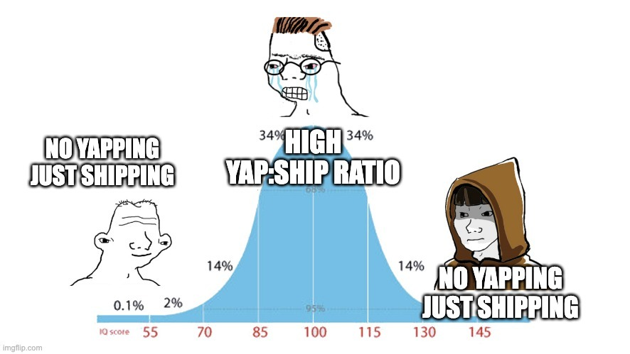

What Is Your Yap : Ship Ratio?

The first thing I think when I meet someone new: “What is their Yap : Ship ratio?”
Yapping is planning and talking about something; shipping is actually doing it. Your ratio is simply time spent yapping vs. time spent shipping.
Some examples I've come across recently
Friend 1: Plans hundreds of startup ideas, builds nothing. A mental masturbator.
Friend 2: Watches every science-based lifter and builds the “perfect” program, but never actually goes to the gym.
Friend 3: Ships cool stuff but speaks in LinkedIn headlines. These people turn me off.
Friend 4: Ships daily, iterates quickly, and never yaps. Be more like this friend.
I used to be a yapper.
During my gap year, I spent $10K on books and spoke to dozens of people, thinking about what I want to do for career and life. I balanced that with hands-on experience, but I now realise all that yapping was a waste of time.
Now I try to keep the gap between thinking and doing as small as possible, ideally within one week. (For higher-stakes, post-launch work, more planning is needed.)
How I Yap Less and Ship More
- Zero content consumption (unless answering a specific question)
- Time-box shipping deadlines
- Set public accountability with real consequences
- Schedule tasks in my calendar, no “To Do Later” lists
- Aim for “done enough,” not perfection
- Ignore what everyone else is doing
- Ship the shittiest MVP and iterate
You don’t need more information. Do something, follow the data, double down, and repeat.
Quit the yap—and ship something today.